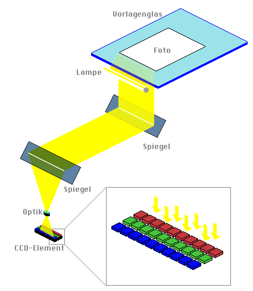
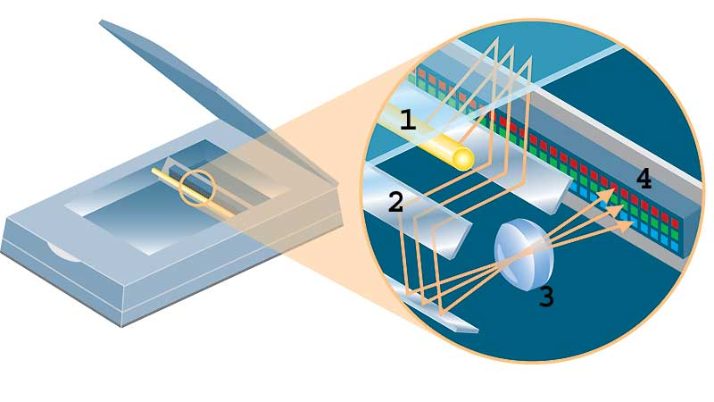
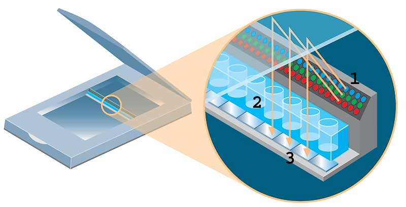

Beim Scannen beleuchtet eine Lichtquelle die Vorlage (Fotografie, Zeitungsseite, Buchseite, Zeichnung, Plan, etc.) zeilenweise. Das von der Vorlage an den beleuchteten Stellen reflektierte Licht wird über Spiegel zu lichtempfindlichen Sensoren (Fotosensoren) geführt (Abtastung). Die Sensoren liefern (analoge) elektrische Signale, die mit Analog/Digital-Wandlern in Zahlenwerte umgewandelt werden. Die Bildpunktdichte ergibt sich aus der Anzahl der Fotozellen pro inch auf der Abtastzeile. Das Pixelbild entsteht durch die fortlaufende Ergänzung der bereits erfassten Zeilen.
Die Genauigkeit der Abbildung hängt u.a. von der Anzahl der Fotosensoren (Bildpunktdichte) und von der Genauigkeit des Transportvorschubs der Scan-Zeile ab. Die Genauigkeit der Zeile ist über die ganze Fläche der Vorlage gleich. Der Scan-Vorgang ist aber relativ langsam.

Quelle: http://www.picolor.com/wp-content/uploads/2011/01/scannerschema.gif
Im CCD- (Charge Coupled Device) Scanner beleuchtet eine Lampe [1] die Vorlage. Über das Spiegelsystem [2] gelangt das reflektierte Licht zum Prisma [3], welches das Licht in die Farbanteile Rot/Grün/Blau (RGB) zerlegt. Für jeden Farbanteil gibt es eine eigene CCD-Zeile [4].

Quelle: http://www.chip.de/ii/4830337_d3bb35f70f.jpg
Im CIS- (Compact Image Sensor) Scanner dienen rote, grüne und blaue LEDs [1] als Lichtquellen. Über ein stabförmiges Linsensystem [2] gelangt das Licht zum Sensor [3]. Der Aufbau eines CIS-Scanners ist kompakt und preiswert, die einfache Stablinse bewirkt aber eine geringe Tiefenschärfe.

{kind=link}